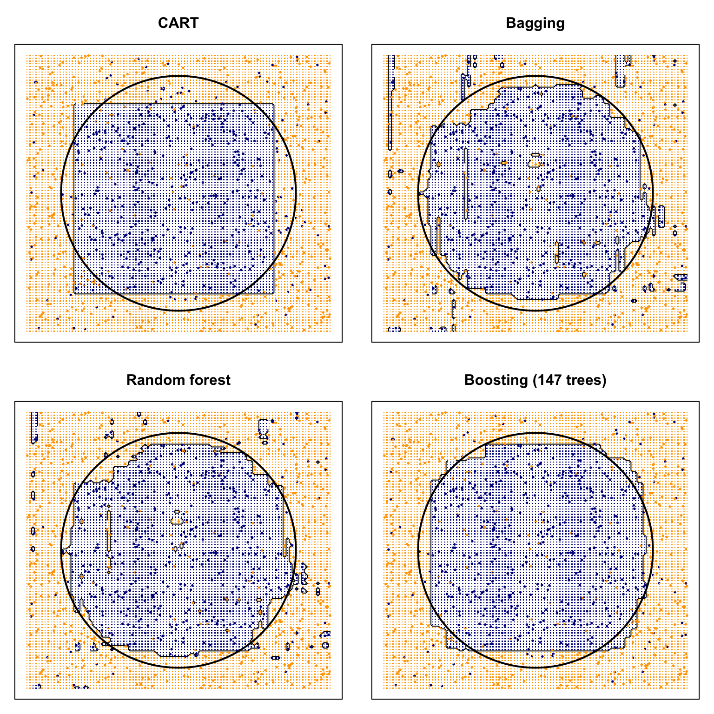

10.4 A Controlled Comparison
The Python version of this example and of all the other examples in this chapter can be found here: Python Code for Classification Trees And Ensemble .
The figures above use different data sets, so they cannot answer a simple question: on one problem, how do a single tree, bagging, a random forest, and boosting compare? We reuse the circular Bayes rule from the beginning of the chapter, with one training draw and one independent test draw.
library(rpart)
library(ipred)
library(randomForest)
library(gbm)
set.seed(10)
n = 1000
sim_circle = function(n) {
x1 = runif(n, -1, 1)
x2 = runif(n, -1, 1)
p = ifelse(x1^2 + x2^2 < 0.6, 0.9, 0.1)
y = rbinom(n, 1, p)
data.frame(x1 = x1, x2 = x2, y = y)
}
train = sim_circle(n)
test = sim_circle(n)
train$yf = factor(train$y)
test$yf = factor(test$y)
bayes_rule = function(x1, x2) as.integer(x1^2 + x2^2 < 0.6)
# 1. Pruned CART
cart.fit = rpart(yf ~ x1 + x2, data = train)
cp.best = cart.fit$cptable[which.min(cart.fit$cptable[, "xerror"]),
"CP"]
cart.pr = prune(cart.fit, cp = cp.best)
# 2. Bagging
bag.fit = bagging(yf ~ x1 + x2, data = train, nbagg = 200)
# 3. Random forest (classification default mtry =
# floor(sqrt(p)) = 1)
rf.fit = randomForest(yf ~ x1 + x2, data = train, ntree = 500,
mtry = 1)
# 4. Gradient boosting; choose T by CV
gbm.fit = gbm(y ~ x1 + x2, data = train, distribution = "bernoulli",
n.trees = 400, shrinkage = 0.05, interaction.depth = 2, bag.fraction = 0.8,
cv.folds = 5)
best.iter = gbm.perf(gbm.fit, method = "cv", plot.it = FALSE)xgrid = expand.grid(x1 = seq(-1, 1, 0.02), x2 = seq(-1, 1, 0.02))
pred_grid = list(CART = as.integer(predict(cart.pr, xgrid, type = "class")) -
1, Bagging = as.integer(predict(bag.fit, xgrid)) - 1, Forest = as.integer(predict(rf.fit,
xgrid)) - 1, Boosting = as.integer(predict(gbm.fit, xgrid,
n.trees = best.iter, type = "response") > 0.5))
plot_panel = function(title, pred) {
z = matrix(pred, nrow = length(unique(xgrid$x1)))
contour(seq(-1, 1, 0.02), seq(-1, 1, 0.02), z, levels = 0.5,
labels = "", axes = FALSE)
points(train$x1, train$x2, col = ifelse(train$y == 1, "darkblue",
"orange"), pch = 16, cex = 0.45)
points(xgrid, pch = ".", cex = 1.1, col = ifelse(pred ==
1, "darkblue", "orange"))
symbols(0, 0, circles = sqrt(0.6), add = TRUE, inches = FALSE,
lwd = 2)
box()
title(title)
}
par(mfrow = c(2, 2), mar = c(1, 1, 3, 1))
plot_panel("CART", pred_grid$CART)
plot_panel("Bagging", pred_grid$Bagging)
plot_panel("Random forest", pred_grid$Forest)
plot_panel(paste0("Boosting (", best.iter, " trees)"), pred_grid$Boosting)
The black circle is the Bayes boundary. The single tree builds a coarse staircase. Bagging, the forest, and boosting keep the axis-aligned constraint but average (or add) enough rectangles to track the circle more closely.
pred_test = list(Majority = rep(as.integer(names(which.max(table(train$y)))),
nrow(test)), CART = as.integer(predict(cart.pr, test, type = "class")) -
1, Bagging = as.integer(predict(bag.fit, test)) - 1, Forest = as.integer(predict(rf.fit,
test)) - 1, Boosting = as.integer(predict(gbm.fit, test,
n.trees = best.iter, type = "response") > 0.5))
truth = test$y
bayes = bayes_rule(test$x1, test$x2)
cmp = data.frame(method = names(pred_test), test_error = sapply(pred_test,
function(ph) mean(ph != truth)), agree_with_Bayes = sapply(pred_test,
function(ph) mean(ph == bayes)))
cmp$test_error = round(cmp$test_error, 3)
cmp$agree_with_Bayes = round(cmp$agree_with_Bayes, 3)
cmp## method test_error agree_with_Bayes
## Majority Majority 0.491 0.515
## CART CART 0.173 0.915
## Bagging Bagging 0.154 0.934
## Forest Forest 0.141 0.949
## Boosting Boosting 0.141 0.947Two remarks follow from the table and the figure, and they are the point of putting all four methods on the same draw.
- Test error and agreement with the Bayes rule need not rank methods in the same order. A procedure can match the circle and still miss labels near the boundary, where the class probability is \(0.9\) on one side and \(0.1\) on the other—so even the Bayes rule has error \(0.1\).
- The forest used the default \(\texttt{mtry}=1\) and a large
ntree; extra trees after the OOB curve has flattened cost time rather than decisions. Boosting chose \(T\) from the CV trace (best.iterin the plot title). That is the practical difference advertised earlier: a forest is mostly insensitive to using “too many” trees, and a boosted model is not.
Which method, and when?
The last four classification chapters are different answers to the same prediction problem:
- Logistic regression when you want coefficients, standard errors, and calibrated probabilities from a linear predictor on the logit scale.
- Discriminant analysis when a Gaussian (or similar) class-conditional model is plausible and you want a rule that uses the pooled or class-specific covariance.
- SVM when the margin story matters and you are willing to work with a kernel rather than with probabilities.
- A single tree when the decision rule itself has to be shown—a split on sex and class, for example.
- A random forest as a strong default among tree methods: little tuning beyond
mtry, and OOB error as a built-in check. - Boosting (
gbm,xgboost) when you will tune the number of iterations and care about the last bits of accuracy. It is more sensitive to \(T\) and to shrinkage than a forest is.